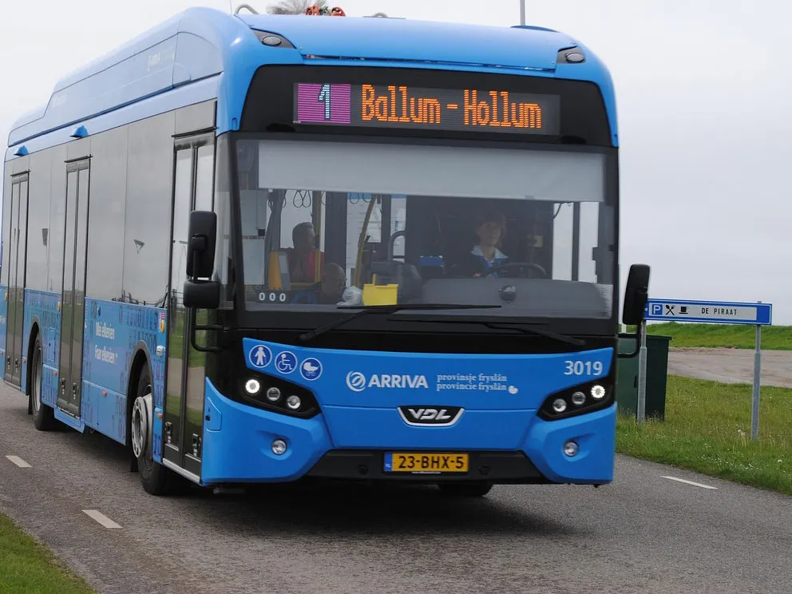

directions_car開車
從北部過來可經由國道一號下彰化交流道走彰鹿路往鹿港方向，或是經由61線西濱快速道路下鹿港交流道走彰濱五路往鹿港市區
從南部過來可經由國道一號下埔鹽系統交流道走76線東西向快速道路往鹿港方向，或是經由61線西濱快速道路下福興交流道走員大排平面道路轉往鹿港市區
住國道三號沿線可經由國道三號開往八卦山隧道走16線東西向快速道路往鹿港方向
directions_bike騎車
從北部過來可經由省道台一線走到彰化市轉金馬路轉中華西路接彰鹿路往鹿港方向，或是經由省道台17線走到鹿港市區
從南部過來可經由省道台一線走到員林市轉76線東西向快速道路平面道路往鹿港方向，或是經由省道台17線走到鹿港市區
住中部省道台三線沿線可經由省道台三線轉省道台14線轉省道台一線往南再轉中華路接中華西路接彰鹿路往鹿港方向

directions_bus大眾交通
搭火車到彰化火車站轉彰化客運往鹿港總站，或是搭火車到員林火車站搭員林客運往鹿港
搭高鐵到高鐵台中站搭彰化客運到鹿港總站，高鐵彰化站沒有直達鹿港的公車，那邊交通也不便不建議搭到那
北部還可以搭乘統聯客運到鹿港站